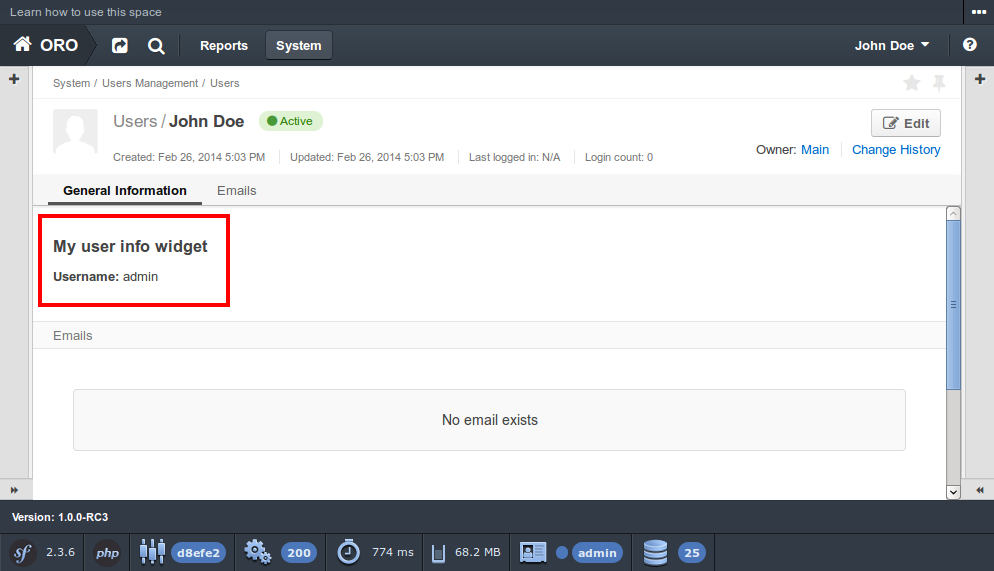

How to Extend Existing Bundle¶
Used application: OroPlatform 1.7
Bundle Extension¶
The OroPlatform application uses default Symfony functionality to extend bundle (in terms of Symfony it is called
inheritance). To do that you have to override method getParent in your bundle class.
Let’s assume that we are using demo bundle from How to create new bundle
article and we want to extend OroUserBundle - in this case AcmeNewBundle.php file should look like this:
1 2 3 4 5 6 7 8 9 10 11 12 13 | <?php
// src/Acme/Bundle/NewBundle/AcmeNewBundle.php
namespace Acme\Bundle\NewBundle;
use Symfony\Component\HttpKernel\Bundle\Bundle;
class AcmeNewBundle extends Bundle
{
public function getParent()
{
return 'OroUserBundle';
}
}
|
Caution
Due to the Symfony default behaviour the routing from the parent bundle will not be imported automatically. So in case if you have any controllers defined in your child bundle you should copy routing definitions from the parent bundle. You can check the Routing section of Symfony’s How to Override any Part of a Bundle manual for more information.
In our case will need to add the routing.yml file with the following content:
1 2 3 4 5 | # src/Acme/Bundle/NewBundle/Resources/config/oro/routing.yml
acme_parent_bundle:
resource: "@!OroUserBundle/Controller"
type: annotation
prefix: /user
|
The @! notion is important since it states that the resource should be imported from the parent bundle.
Now let’s check that our extension works - to do that let’s create a custom template for the User information widget.
So, we need to create /src/Acme/Bundle/NewBundle/Resources/views/User/widget/info.html.twig file
(this file structure duplicates the file structure of the extended bundle) with our custom content:
1 2 3 4 5 6 7 8 | <div class="widget-content">
<div class="row-fluid form-horizontal">
<div class="responsive-block">
<h4>My user info widget</h4>
<b>Username:</b> {{ entity.username }}
</div>
</div>
</div>
|
And now we can go to the user view page (e.g. http://<oro_application_base_url>/app_dev.php/#url=/app_dev.php/user/view/1) and find that user info widget has changed:
That’s all - now our demo bundle extends OroUserBundle and can override its parts.
Features and Recommendations¶
OroPlatform provides several ways of extending bundle resources, and each of them should be used in specific cases. Extension is the most simple and useful way to do that for basic bundle resources and it can be used widely all over the system. Other ways to extend specific resources (e.g. configuration files) will be described in further articles. Here are the basic parts that can be extended and the way to do that:
- controller - using bundle extension (inheritance);
- templates - using bundle extension (inheritance);
- bundles - using file /Resources/config/oro/bundles.yml;
- routing - using file /Resources/config/oro/routing.yml;
- twig themes - using file /Resources/config/oro/twig.yml;
- localization - using files /Resources/config/oro/locale_data.yml, /Resources/config/oro/name_format.yml, /Resources/config/oro/address_format.yml, /Resources/config/oro/currency_data.yml.